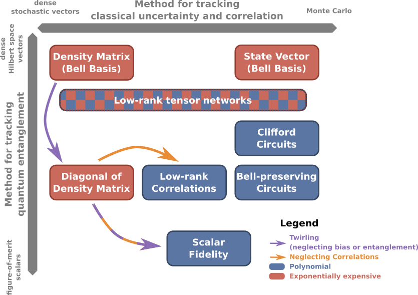

Choosing a Backend and Modeling Tradeoffs
QuantumSavory separates symbolic descriptions from numerical backends because no single simulator is the right tool for every problem.
The practical question is not "which backend is best in general?", but "which backend preserves the physics I care about at an acceptable computational cost?" The answer depends not only on circuit structure, but also on what type of physical system you need to represent.

The figure above highlights two largely independent choices: how you represent classical uncertainty and stochastic effects, and how you represent quantum correlations. QuantumSavory is designed to let you navigate those axes without rewriting the whole model each time you change approximation strategy.
Two Important Tradeoffs
There are two largely independent choices in quantum simulation:
- how to represent classical uncertainty and stochastic effects, and
- how to represent quantum correlations and entanglement.
Dense state vectors and density matrices are the most direct descriptions, but they scale poorly. Specialized formalisms become much cheaper by exploiting structure in the state, the operations, or the noise model. That is especially important in QuantumSavory because the library aims to support more than ideal qubits: quantum modes, multi-level systems, continuous-variable models, and other heterogeneous hardware abstractions all call for different numerical tools.
Backend Choices In QuantumSavory
QuantumClifford
Use QuantumClifford when your model is close to stabilizer dynamics:
- qubit-based systems,
- Clifford gates and Pauli measurements,
- Pauli-style noise models or approximations, and
- large simulations where speed matters.
This is usually the fastest option for repeater-style and error-correction-like workflows that stay near the stabilizer regime. In QuantumSavory this backend is provided through the QuantumClifford library, which uses tableau-based stabilizer simulation with destabilizer improvements.
QuantumOptics
Use QuantumOptics when you need a more general wavefunction-style description:
- non-Clifford dynamics,
- smaller systems where flexibility matters more than scale, or
- a reference calculation against which to compare faster approximations.
This is the most general built-in path, but it pays for that generality with exponential scaling in the generic case. In practice, this is the backend to reach for when you need the flexibility of the QuantumOptics state-vector representation and the problem size is still manageable.
Gabs
Use Gabs when the system is naturally Gaussian:
- bosonic modes,
- Gaussian states and Gaussian operations, and
- optical or continuous-variable models that remain in the Gaussian regime.
For those models, Gaussian simulation can be dramatically cheaper than a general wavefunction treatment.
Backend Extension
QuantumSavory is not limited to the backends listed above. The symbolic frontend and register interface are designed so that new numerical backends can be integrated without rewriting higher-level models and protocols. This matters because new hardware abstractions and new specialized simulation methods keep appearing, and a full-stack tool needs to absorb them without forcing users to start over.
Why The Symbolic Frontend Matters
The symbolic frontend lets you describe the intended state or operation first, without immediately committing to a specific numerical representation. That is what makes it possible to compare backends without rewriting the whole model. It also means you do not have to manually encode the same operation, observable, or noise process in several different backend-specific mathematical languages.
Declarative Noise And Time
Noise and time evolution are specified at the model level rather than rederived backend by backend. In other words, the user declares what physical processes are present and when protocol events happen; QuantumSavory handles the representation-specific lowering and time bookkeeping needed to execute that model.
Practical Guidance
- Start with the cheapest backend that still captures the effect you care about.
- Use a more general backend to validate an approximation on smaller instances.
- Prefer restricted formalisms when the physics genuinely fits them.
- Remember that different subsystems or scenarios may call for different modeling choices.
Future Direction
Tensor-network and other reduced-complexity backends fit naturally into this architecture, but they are not yet first-class options in QuantumSavory.
Where To Go Next
- Read Restricted Formalisms and Efficient Simulation for more background on why these backend families are useful.
- Read Modeling Registers, Factorization, and Time for how those backend choices show up in a concrete register model.
- Read Properties and Background Noise Processes for how subsystem types and background processes affect the model.
- Read Symbolic Frontend for the conceptual role of symbolic modeling, and Symbolic Expressions Reference for the concrete operators and conversion examples.